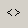
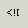
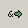
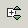

Selects the current element for the cursor position. Used repeatedly, selects the content of all ancestors up to the root element.

Selects the current element content (without start and end tags) for the cursor position.

Use the Tag button (or select Edit->Tag or use the key combination Ctrl-T) to easily surround an existing piece of content with an element of your choosing. Simply highlight the piece of content and press the Tag button. Enter the desired element name in the pop-up dialog box.

Use the Comment button (or select Edit->Comment) to comment out an existing piece of content. Simply highlight the piece of content and press the Comment button. (Remember: nested comments are not allowed in XML).

Use the CDATA button (or select Edit->CDATA) to convert an existing piece of content to a CDATA section. Simply highlight the piece of content and press the CDATA button.

Use the Split Element button (or select Edit->Split Element) to add an end tag and new start tag for the current element at the cursor position.

Use the Convert Characters to Entities button to change characters above a certain range to the equivalent character reference or to a named entity reference. Special care must be taken when converting content with nested elements, comments, CDATA, etc. See the section on Special Characters for more details.

Use the Convert Entities to Characters button to change named entity references or character references to actual characters. See the section on Special Characters for more details.

Use the Strip Tags From Selection button to remove start and end tags from the current selection. Note that Comments, CDATA, PIs, etc will not be affected.

Use the Goto Start Tag button to highlight the start tag for the current cursor position

Use the Goto End Tag button to highlight the end tag for the current cursor position

Use the Goto button (or select Edit->Goto) to go to a particular line number. Enter the line number in the pop-up dialog and press OK (or the Enter key). To turn line numbering on or off in the Editor select File->Preferences, go to the Views tab and set/reset the Show Line Numbers field in the Editor section.

Use the Format button (or select Edit->Format) to pretty-print the XML content. To control the formatting options, select File->Preferences and choose the Format tab.

The Unlock button indicates that all content can be edited. Click once or select Edit->Lock). The button changes to Lock ( ) and indicates that all element names in start and end tags will no longer be editable. (Only attribute values and text content can now be modified).
) and indicates that all element names in start and end tags will no longer be editable. (Only attribute values and text content can now be modified).
Click the Lock button once or select Edit->Double Lock. The button changes to Double Lock ( ) and indicates that attribute values will no longer editable, effectively locking all the markup and only allowing changes to text content. Note that while the Lock or Double Lock buttons are active, there will be no tag prompting and any attempt to create start or end tags will result in automatic entity replacement (for example, if you copy and paste tags).
) and indicates that attribute values will no longer editable, effectively locking all the markup and only allowing changes to text content. Note that while the Lock or Double Lock buttons are active, there will be no tag prompting and any attempt to create start or end tags will result in automatic entity replacement (for example, if you copy and paste tags).
Use the Highlight button (or select View->Highlight) to highlight elements and attributes from different namespaces, using a different color for each namespace.

Use the Collapse All button (or select View->Collapse All) to only show the root element in Content Folding.

Use the Expand All button (or select View->Expand All) to show every element in Content Folding.